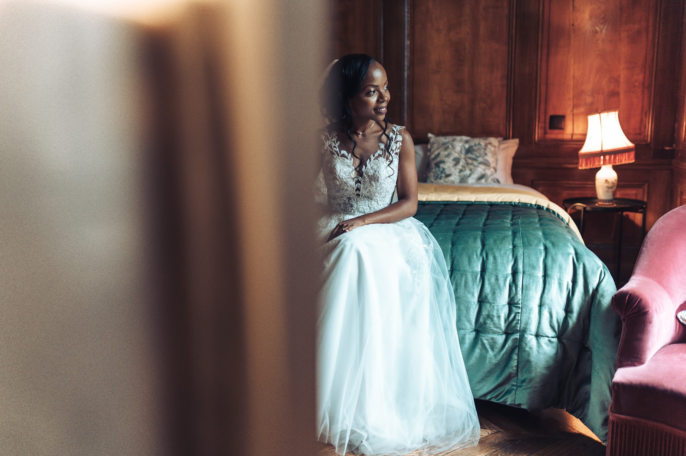
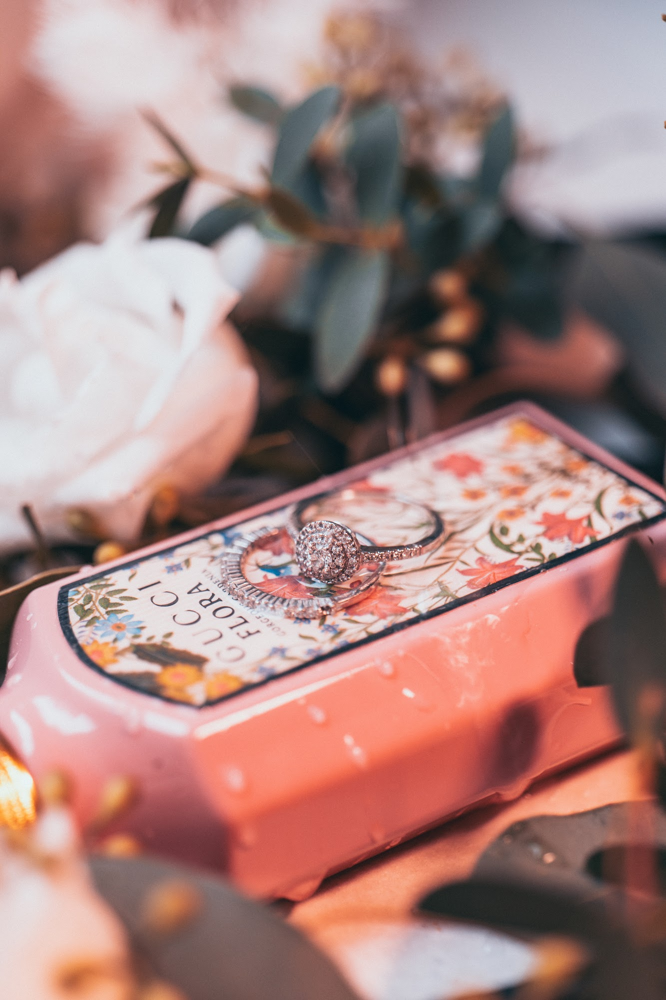

Bridal Getting Ready Photos: Advice for Emotional Memories
The quiet hours before walking down the aisle carry a tender and unique energy. Capturing these moments with authenticity takes a bit of thoughtful preparation. Here is my guide to making your bridal getting ready photos effortless and truly memorable.

Choosing the Best Room for Bridal Getting Ready Photos
The room you select for your morning preparations plays a vital role in the look of your images. A spacious suite or room filled with natural window light creates a soft glow on skin tones and highlights fine fabrics.
Whether you are getting ready at a historic venue near Lyon or a private estate in the French countryside, pick a room with minimal clutter. Decluttering surfaces the night before lets us focus entirely on pure emotion and timeless details.

Gather Your Accessories and Keepsakes Early

Morning timelines often move faster than expected. To ensure nothing is missed, place your bridal accessories together in a single box before the wedding photographer arrives.
Include your shoes, perfume, rings, heirloom jewelry, and stationery. Having these items organized allows me to craft elegant still-life photographs while you enjoy your hair and makeup routine.
Timing Hair, Makeup, and Dressing Up

Position your hair and makeup station facing a large window to embrace natural daylight. Plan to be fully styled about one hour before you need to leave the venue.
This buffer gives you room to breathe, put on your gown without rushing, and take a few quiet portraits before greeting your guests.
Capturing Candid Moments with Loved Ones
The getting-ready period is about shared intimacy with your closest friends and family. Soft laughter, warm hugs, and emotional glances bring deep character to your wedding album.
My style relies on subtle observation. Instead of forcing unnatural poses, I let genuine connections take center stage as your loved ones help adjust your veil or share a celebratory toast.

Creating a Calm Atmosphere Before the Ceremony
Set a peaceful tone by playing a relaxed music playlist and keeping room noise gentle. Limiting the room to key family members or bridesmaids keeps stress levels low and confidence high.
These quiet moments right before stepping out create powerful memories that you will treasure for years to come.
Frequently asked questions
How much time is needed for bridal getting ready photos?
Allocating around 90 minutes to two hours is ideal. This timeframe covers details, hair and makeup touch-ups, dressing up, and unhurried portraits with your wedding party.
What should I wear while getting my makeup done?
A button-down shirt, a silk robe, or a wrap dress works best. They allow you to change into your gown without disturbing your finished hairstyle.
Can you capture both the groom and bride preparations?
Yes, if both preparations occur at the same location or nearby around Lyon, France. I can easily move between both rooms to capture both stories.
What if my room lacks sufficient natural light?
We can adapt easily by stepping into a bright hallway, a covered terrace, or an adjoining garden area for the final dressing steps.
Planning your wedding in France? Contact me to share your story and discuss your photography aspirations.
Let’s talk about your project